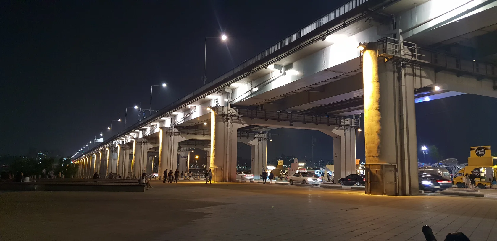

본문으로 건너뛰기
Dozziny’s
Blog
.
바이브코딩
지난 글
GitHub
↗

TODAY
—
도찌니의
기술 노트
.
쓰다가 막힌 도구와 바이브코딩으로 만든 작은 앱들.
다음에 다시 꺼내 볼 기록을 남겨요.
바이브코딩
로컬 데이터센터 앱
문서 본문 검색과 폴더 정리
→
맥용 윈도우 작업표시줄
시작 메뉴에서 앱 검색·고정·전환
→
2023년 개발 기록
티스토리 전체 보기
↗
2023.06.27
AWS를 이용한 자산관리시스템 (with terraform)
↗
2023.05.31
AWS Lambda Metric / k8s pending
↗
2023.05.30
마이크로서비스
↗
2023.05.18
k8s 배포 전략 , Service type
↗
2023.04.11
YAML 작성
↗